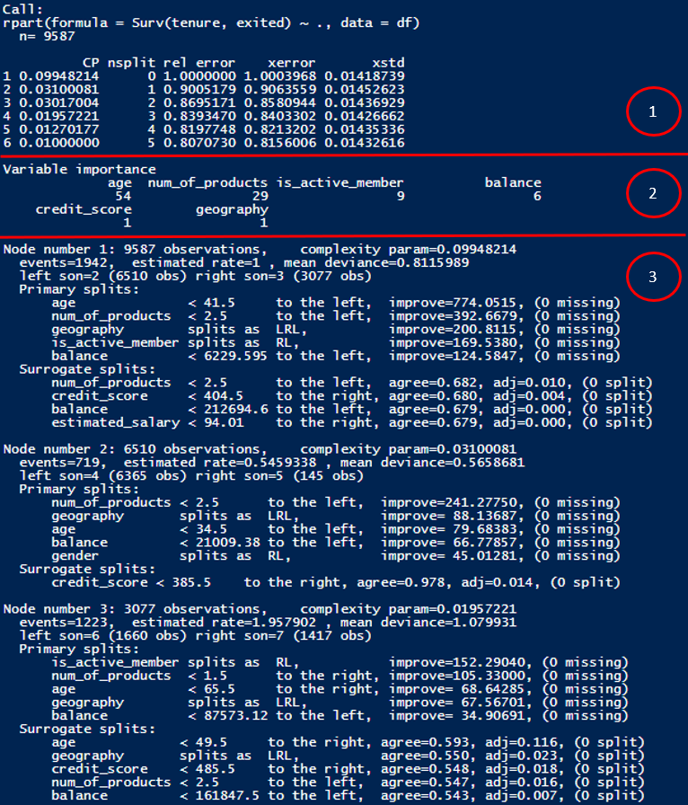
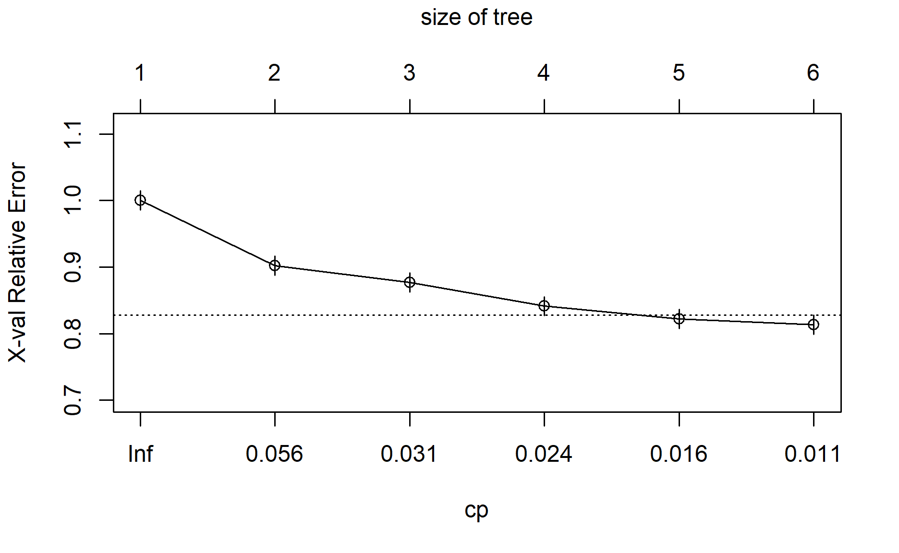
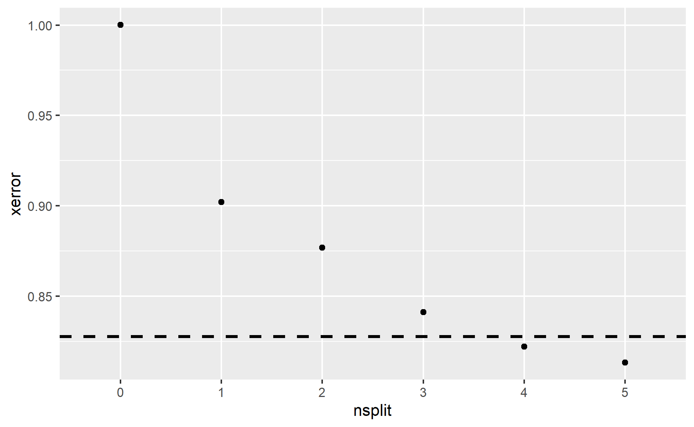
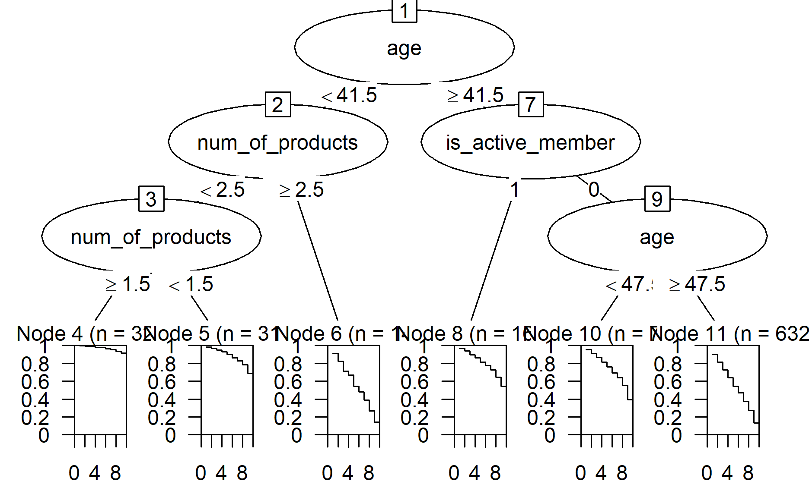
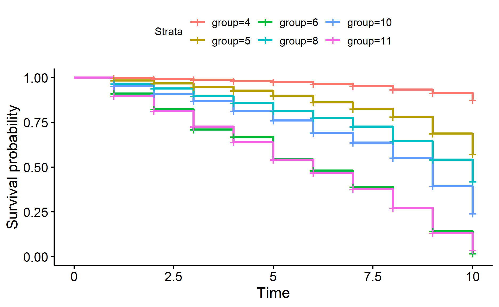
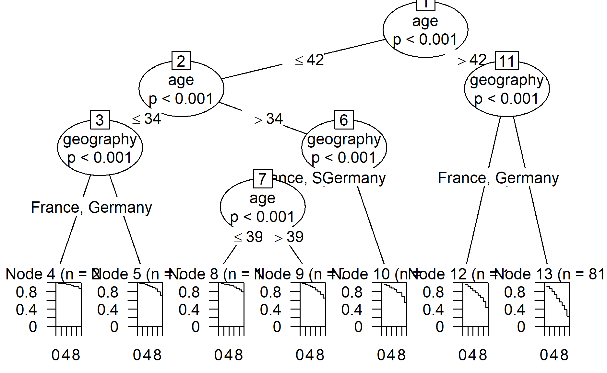

In previous posts, I have explored using cox proportional hazards model to perform survival analysis.
(Gepp and Kumar 2015) found out decision trees could have a better classification accuracy than other techniques (eg. cox proportional hazards model).

Photo by Anders Nord on Unsplash
This makes me curious on how to build a decision tree to perform survival analysis.
I have read through different examples, posts and articles to satisfy my own curiousity, otherwise I will not be able to sleep at night.
 Taken from giphy
Taken from giphy
For the explanations on survival analysis, you may refer to my previous post.
Also, in this post, I will assume the readers have some basic understanding on how decision trees work.
Survival analysis with decision tree
The different decision tree R packages support survival analysis.
Demonstration
In this demonstration, I will be using this bank dataset from Kaggle.
Also, there are many ways we could build a survival decision tree.
Therefore, I will be using 3 different methods to build survival decision trees.
Setup the environment
First, I will load the necessary packages into the environment.
pacman::p_load(tidyverse, lubridate, janitor, survival, survminer, partykit, rpart, censored)Import Data
First I will import the dataset into the environment.
I will also clean the column names, drop the columns I don’t need and transform the columns to be the right format.
df <- read_csv("https://raw.githubusercontent.com/jasperlok/my-blog/master/_posts/2022-09-10-kaplan-meier/data/Churn_Modelling.csv") %>%
clean_names() %>%
select(-c(row_number, customer_id, surname)) %>%
mutate(has_cr_card = factor(has_cr_card),
is_active_member = factor(is_active_member)) %>%
filter(tenure > 0)Build decision trees
Now, let’s build the decision tree!
Method 1 - Use rpart package
In this first method, I will use rpart package to build the tree.
As usual, the target variable will be our surv object, which contains the duration and status.
rpart_fit <-
rpart(Surv(tenure, exited) ~ ., data = df)We could call the fitted object to output the results.
rpart_fitn= 9587
node), split, n, deviance, yval
* denotes terminal node
1) root 9587 7780.7980 1.0000000
2) age< 41.5 6510 3683.8010 0.5459338
4) num_of_products< 2.5 6365 3295.1530 0.4751260
8) num_of_products>=1.5 3237 915.7341 0.1968239 *
9) num_of_products< 1.5 3128 2144.6720 0.7674072 *
5) num_of_products>=2.5 145 147.4370 3.6416170 *
3) age>=41.5 3077 3322.9470 1.9579020
6) is_active_member=1 1660 1540.7610 1.3032990 *
7) is_active_member=0 1417 1629.8980 2.6766400
14) age< 47.5 785 836.4027 1.8475160 *
15) age>=47.5 632 694.6653 3.7496700 *From the result, we can observe the following:
The split condition at each node
Number of data points fall under each node
Deviance at each node
Fitted value of the response at the node
Note the root node value is always fixed to 1
The
yvalof the subsequent nodes represent the relative riskness compared to the overallEg. The exited rate at node 3 is about 1.96 times the overall rate
Alternatively, we could pass the model into summary function, which gives us more info on the model.
summary(rpart_fit)Call:
rpart(formula = Surv(tenure, exited) ~ ., data = df)
n= 9587
CP nsplit rel error xerror xstd
1 0.09948214 0 1.0000000 1.0001186 0.01418356
2 0.03100081 1 0.9005179 0.9021411 0.01447699
3 0.03017004 2 0.8695171 0.8769640 0.01458997
4 0.01957221 3 0.8393470 0.8411863 0.01427720
5 0.01270177 4 0.8197748 0.8221423 0.01436621
6 0.01000000 5 0.8070730 0.8132424 0.01433770
Variable importance
age num_of_products is_active_member balance
54 29 9 6
credit_score geography
1 1
Node number 1: 9587 observations, complexity param=0.09948214
events=1942, estimated rate=1 , mean deviance=0.8115989
left son=2 (6510 obs) right son=3 (3077 obs)
Primary splits:
age < 41.5 to the left, improve=774.0515, (0 missing)
num_of_products < 2.5 to the left, improve=392.6679, (0 missing)
geography splits as LRL, improve=200.8115, (0 missing)
is_active_member splits as RL, improve=169.5380, (0 missing)
balance < 6229.595 to the left, improve=124.5847, (0 missing)
Surrogate splits:
num_of_products < 2.5 to the left, agree=0.682, adj=0.010, (0 split)
credit_score < 404.5 to the right, agree=0.680, adj=0.004, (0 split)
balance < 212694.6 to the left, agree=0.679, adj=0.000, (0 split)
estimated_salary < 94.01 to the right, agree=0.679, adj=0.000, (0 split)
Node number 2: 6510 observations, complexity param=0.03100081
events=719, estimated rate=0.5459338 , mean deviance=0.5658681
left son=4 (6365 obs) right son=5 (145 obs)
Primary splits:
num_of_products < 2.5 to the left, improve=241.27750, (0 missing)
geography splits as LRL, improve= 88.13687, (0 missing)
age < 34.5 to the left, improve= 79.68383, (0 missing)
balance < 21009.38 to the left, improve= 66.77857, (0 missing)
gender splits as RL, improve= 45.01281, (0 missing)
Surrogate splits:
credit_score < 385.5 to the right, agree=0.978, adj=0.014, (0 split)
Node number 3: 3077 observations, complexity param=0.01957221
events=1223, estimated rate=1.957902 , mean deviance=1.079931
left son=6 (1660 obs) right son=7 (1417 obs)
Primary splits:
is_active_member splits as RL, improve=152.29040, (0 missing)
num_of_products < 1.5 to the right, improve=105.33000, (0 missing)
age < 65.5 to the right, improve= 68.64285, (0 missing)
geography splits as LRL, improve= 67.56701, (0 missing)
balance < 87573.12 to the left, improve= 34.90691, (0 missing)
Surrogate splits:
age < 49.5 to the right, agree=0.593, adj=0.116, (0 split)
geography splits as LRL, agree=0.550, adj=0.023, (0 split)
credit_score < 485.5 to the right, agree=0.548, adj=0.018, (0 split)
num_of_products < 2.5 to the left, agree=0.547, adj=0.016, (0 split)
balance < 161847.5 to the left, agree=0.543, adj=0.007, (0 split)
Node number 4: 6365 observations, complexity param=0.03017004
events=612, estimated rate=0.475126 , mean deviance=0.5176988
left son=8 (3237 obs) right son=9 (3128 obs)
Primary splits:
num_of_products < 1.5 to the right, improve=234.75170, (0 missing)
geography splits as LRL, improve= 74.62815, (0 missing)
age < 34.5 to the left, improve= 64.71067, (0 missing)
balance < 21009.38 to the left, improve= 58.77733, (0 missing)
is_active_member splits as RL, improve= 42.02675, (0 missing)
Surrogate splits:
balance < 21009.38 to the left, agree=0.706, adj=0.401, (0 split)
age < 39.5 to the left, agree=0.522, adj=0.028, (0 split)
geography splits as LRL, agree=0.517, adj=0.018, (0 split)
credit_score < 572.5 to the right, agree=0.515, adj=0.013, (0 split)
estimated_salary < 186897.4 to the left, agree=0.510, adj=0.004, (0 split)
Node number 5: 145 observations
events=107, estimated rate=3.641617 , mean deviance=1.016807
Node number 6: 1660 observations
events=427, estimated rate=1.303299 , mean deviance=0.9281695
Node number 7: 1417 observations, complexity param=0.01270177
events=796, estimated rate=2.67664 , mean deviance=1.150246
left son=14 (785 obs) right son=15 (632 obs)
Primary splits:
age < 47.5 to the left, improve=98.844360, (0 missing)
num_of_products < 1.5 to the right, improve=54.817880, (0 missing)
geography splits as LRL, improve=18.576390, (0 missing)
gender splits as RL, improve=12.347840, (0 missing)
balance < 6229.595 to the left, improve= 7.494066, (0 missing)
Surrogate splits:
geography splits as LRL, agree=0.572, adj=0.040, (0 split)
credit_score < 768.5 to the left, agree=0.565, adj=0.025, (0 split)
num_of_products < 2.5 to the left, agree=0.560, adj=0.014, (0 split)
estimated_salary < 14041.56 to the right, agree=0.559, adj=0.011, (0 split)
balance < 166745.5 to the left, agree=0.555, adj=0.003, (0 split)
Node number 8: 3237 observations
events=129, estimated rate=0.1968239 , mean deviance=0.2828959
Node number 9: 3128 observations
events=483, estimated rate=0.7674072 , mean deviance=0.6856368
Node number 14: 785 observations
events=312, estimated rate=1.847516 , mean deviance=1.065481
Node number 15: 632 observations
events=484, estimated rate=3.74967 , mean deviance=1.099154 Woh, there are a lot of info within the summary function.
The results can be split into different parts.

Summary
First part: Results under different complexity parameters
Second part: Variable importance
- Note that according to the documentation, the variable importance is being scaled so that they will add up to 100
Third part: Tree results under each split
Prune the tree
To prune the tree, plotcp function can be very handy.
It plots the cross validation results based on the rpart object.
Form this post, it seems like there are different methods in choosing where to prune the tree.
Based on the explanation in the post, below are the three common methods in selecting the optimal levels for pruning:
Method 1: Choose minimum xerror
Method 2: Choose the xerror < minimum(xerror) + xstd
- This method accounts for the variability of xerror from cross-validation
Method 3: Choose xerror +/- xstd overlaps with minimum(xerror) +/- xstd
Since the author mentioned the third method is rarely used, I will focus on method 1 and 2 over here.
Method 1: Choose minimum xerror
First, I will print out the cp by using printcp function.
printcp(rpart_fit)
Survival regression tree:
rpart(formula = Surv(tenure, exited) ~ ., data = df)
Variables actually used in tree construction:
[1] age is_active_member num_of_products
Root node error: 7780.8/9587 = 0.8116
n= 9587
CP nsplit rel error xerror xstd
1 0.099482 0 1.00000 1.00012 0.014184
2 0.031001 1 0.90052 0.90214 0.014477
3 0.030170 2 0.86952 0.87696 0.014590
4 0.019572 3 0.83935 0.84119 0.014277
5 0.012702 4 0.81977 0.82214 0.014366
6 0.010000 5 0.80707 0.81324 0.014338From the result above, we will choose nsplit = 5 as it has the lowest xerror.
Method 2: Choose the xerror < minimum(xerror) + xstd
rpart package has a nice function (i.e. plotcp function) to help us to decide which cp we should use in pruning the tree.
plotcp(rpart_fit)
Based on the documentation, the horizontal line in the graph is drawn on 1 standard error above the minimum xerror.
Alternatively, we could illustrate by using ggplot.
rpart_fit_cp <-
printcp(rpart_fit) %>%
as_tibble() %>%
mutate(xerror_plus_std = xerror + xstd)
Survival regression tree:
rpart(formula = Surv(tenure, exited) ~ ., data = df)
Variables actually used in tree construction:
[1] age is_active_member num_of_products
Root node error: 7780.8/9587 = 0.8116
n= 9587
CP nsplit rel error xerror xstd
1 0.099482 0 1.00000 1.00012 0.014184
2 0.031001 1 0.90052 0.90214 0.014477
3 0.030170 2 0.86952 0.87696 0.014590
4 0.019572 3 0.83935 0.84119 0.014277
5 0.012702 4 0.81977 0.82214 0.014366
6 0.010000 5 0.80707 0.81324 0.014338ggplot(rpart_fit_cp,
aes(x = as.character(nsplit), y = xerror)) +
geom_point() +
geom_hline(yintercept = min(rpart_fit_cp$xerror_plus_std),
linetype = 2,
size = 1) +
xlab("nsplit")
Based on the result above, we could choose cp = 0.016 (or nsplit = 4).
To prune the tree, we will use prune function.
prune(rpart_fit, cp = 0.016)n= 9587
node), split, n, deviance, yval
* denotes terminal node
1) root 9587 7780.7980 1.0000000
2) age< 41.5 6510 3683.8010 0.5459338
4) num_of_products< 2.5 6365 3295.1530 0.4751260
8) num_of_products>=1.5 3237 915.7341 0.1968239 *
9) num_of_products< 1.5 3128 2144.6720 0.7674072 *
5) num_of_products>=2.5 145 147.4370 3.6416170 *
3) age>=41.5 3077 3322.9470 1.9579020
6) is_active_member=1 1660 1540.7610 1.3032990 *
7) is_active_member=0 1417 1629.8980 2.6766400 *The result of the pruned tree will be shown after pruning the tree.
Visualize the tree
We could use the plotting functions from rpart package in visualizing the tree.
This would be easier to visualize how the tree looks like, instead of reading a list of splitting rules from the results.
To do so, we need to use plot and text functions to visualize the tree.
The split condition is written on top of the branch. The data points will “go” to left branch if they met the condition.
Note the values at the end of the node are the y-val, which can be found in the fitted object as well.
We could also trace the paths a node took by using path.rpart function.
path.rpart(rpart_fit, nodes = 14)
node number: 14
root
age>=41.5
is_active_member=0
age< 47.5This is a good way to summarize the characteristics of the data points under different nodes.
For example, we can see the data points fall under node 14 are age between 41.5 and 47.5 and they are not active members.
Alternatively, we could pipe the fitted tree from rpart package to a party object before passing into plot function to visualize the tree.
rpart_fit %>%
as.party()
Model formula:
Surv(tenure, exited) ~ credit_score + geography + gender + age +
balance + num_of_products + has_cr_card + is_active_member +
estimated_salary
Fitted party:
[1] root
| [2] age < 41.5
| | [3] num_of_products < 2.5
| | | [4] num_of_products >= 1.5: Inf (n = 3237)
| | | [5] num_of_products < 1.5: Inf (n = 3128)
| | [6] num_of_products >= 2.5: 6.000 (n = 145)
| [7] age >= 41.5
| | [8] is_active_member in 1: 10.000 (n = 1660)
| | [9] is_active_member in 0
| | | [10] age < 47.5: 9.000 (n = 785)
| | | [11] age >= 47.5: 6.000 (n = 632)
Number of inner nodes: 5
Number of terminal nodes: 6The fitted model result will look similar to the result produced from ctree package.
rpart_fit %>%
as.party() %>%
plot()
The cool thing is the result will show us the survival curves under the different groups of customers.
Visualize survival curve
Alternatively, we could visualize the survival curves of the different groups by using ggplot function.
First, I will pull the group info from the fitted object. It is stored under where in the fitted object.
Then, I will convert into a tibble data before joining back to the original dataset.
df_grp <-
rpart_fit$where %>%
as_tibble() %>%
rename(group = value) %>%
bind_cols(df)Once that is done, I will visualize the surival curve by using survfit and ggsurvplot functions as shown below.
survfit(Surv(tenure, exited) ~ group,
data = df_grp) %>%
ggsurvplot(data = df_grp)
Method 2 - Use ctree package
Next, I will use ctree package to build survival decision tree.
As ctree package is unable to accept characters, so I will convert the characters columns into factors.
Let’s build the tree!
ctree_fit <-
ctree(Surv(tenure, exited) ~ ., data = df_factor)Similarly, we could call the fitted object to see the result.
ctree_fit
Model formula:
Surv(tenure, exited) ~ credit_score + geography + gender + age +
balance + num_of_products + has_cr_card + is_active_member +
estimated_salary
Fitted party:
[1] root
| [2] age <= 42
| | [3] age <= 34
| | | [4] balance <= 102073.67
| | | | [5] num_of_products <= 2
| | | | | [6] num_of_products <= 1
| | | | | | [7] balance <= 60280.62: Inf (n = 294)
| | | | | | [8] balance > 60280.62: Inf (n = 341)
| | | | | [9] num_of_products > 1: Inf (n = 1295)
| | | | [10] num_of_products > 2: 10.000 (n = 28)
| | | [11] balance > 102073.67
| | | | [12] geography in France
| | | | | [13] balance <= 191775.65: Inf (n = 679)
| | | | | [14] balance > 191775.65: 9.000 (n = 9)
| | | | [15] geography in Germany, Spain
| | | | | [16] gender in Female: Inf (n = 382)
| | | | | [17] gender in Male: Inf (n = 507)
| | [18] age > 34
| | | [19] geography in France, Spain
| | | | [20] is_active_member in 0
| | | | | [21] age <= 40
| | | | | | [22] gender in Female: 10.000 (n = 447)
| | | | | | [23] gender in Male: Inf (n = 577)
| | | | | [24] age > 40: 10.000 (n = 240)
| | | | [25] is_active_member in 1: Inf (n = 1222)
| | | [26] geography in Germany
| | | | [27] is_active_member in 0: 9.000 (n = 413)
| | | | [28] is_active_member in 1
| | | | | [29] gender in Female: 10.000 (n = 154)
| | | | | [30] gender in Male: Inf (n = 227)
| [31] age > 42
| | [32] is_active_member in 0
| | | [33] age <= 47
| | | | [34] geography in France, Spain: 9.000 (n = 445)
| | | | [35] geography in Germany: 8.000 (n = 176)
| | | [36] age > 47
| | | | [37] age <= 51: 7.000 (n = 278)
| | | | [38] age > 51: 6.000 (n = 354)
| | [39] is_active_member in 1
| | | [40] geography in France, Spain
| | | | [41] age <= 61
| | | | | [42] gender in Female: 9.000 (n = 405)
| | | | | [43] gender in Male: Inf (n = 470)
| | | | [44] age > 61: Inf (n = 251)
| | | [45] geography in Germany
| | | | [46] age <= 67: 8.000 (n = 355)
| | | | [47] age > 67: Inf (n = 38)
Number of inner nodes: 23
Number of terminal nodes: 24Note as rpart and partykit packages are using different methods in splitting the tree, hence the trees might look different between both packages.
As the fitted object is a party object, so we could pass the fitted object into plot function to visualize the tree.
ctree_fit_sub <-
ctree(Surv(tenure, exited) ~ age + geography, data = df_factor)
plot(ctree_fit_sub)
Voila!
Method 3 - Use tidymodels packages to build the trees
Next, I will be exploring how to build a survival decision tree by using my all times favourite R package, tidymodel.
I will also need to load another additional R package, censored in order to perform survival analysis.
 Taken from giphy
Taken from giphy
To do so, I will first indicate what type of model I am building, which R package I am wrapping and what type of problem are we solving here.
tdmodel_specs <-
decision_tree() %>%
set_engine("rpart") %>%
set_mode("censored regression")Then I will fit the model by calling fit function.
tdmodel_fit <-
tdmodel_specs %>%
fit(Surv(tenure, exited) ~ .,
data = df)We can access the rpart object by calling the object as follow:
tdmodel_fit$fit$rpartn= 9587
node), split, n, deviance, yval
* denotes terminal node
1) root 9587 7780.7980 1.0000000
2) age< 41.5 6510 3683.8010 0.5459338
4) num_of_products< 2.5 6365 3295.1530 0.4751260
8) num_of_products>=1.5 3237 915.7341 0.1968239 *
9) num_of_products< 1.5 3128 2144.6720 0.7674072 *
5) num_of_products>=2.5 145 147.4370 3.6416170 *
3) age>=41.5 3077 3322.9470 1.9579020
6) is_active_member=1 1660 1540.7610 1.3032990 *
7) is_active_member=0 1417 1629.8980 2.6766400
14) age< 47.5 785 836.4027 1.8475160 *
15) age>=47.5 632 694.6653 3.7496700 *Similarly, we could convert the object into party object and visualize the tree.
And here you go!
tdmodel_fit$fit$rpart %>%
as.party() %>%
plot()Conclusion
That’s all for the day!
Thanks for reading the post until the end.
Feel free to contact me through email or LinkedIn if you have any suggestions on future topics to share.
Refer to this link for the blog disclaimer.
Till next time, happy learning!
Photo by Sugar Bee on Unsplash